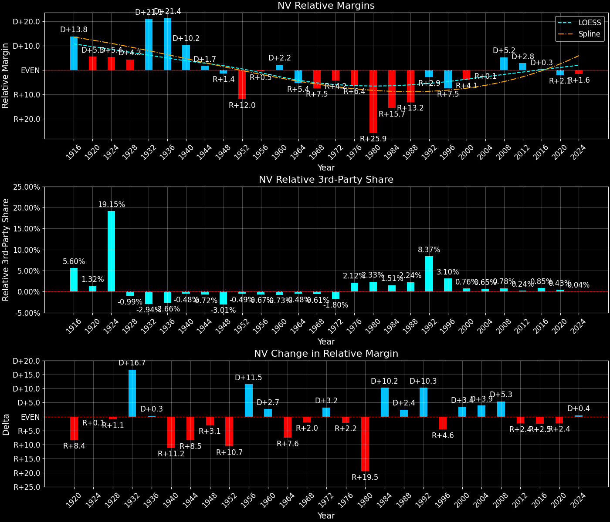

Nevada (NV) — Statewide

Margins · 3rd-Party share · Pres. deltas

Relative margins · Relative 3rd-Party · Rel. deltas
Nevada (NV) — Total Data
| Year | EVs | D | R | State Margin | Nat. Margin | Rel. Margin | Total votes |
|---|---|---|---|---|---|---|---|
| 1968 | 3 | 60,598(39.3%) | 73,188(47.5%) | R+8.2 | R+0.6 | R+7.6 | 154,218 |
| 1972 | 3 | 66,016(36.3%) | 115,750(63.7%) | R+27.4 (Δ R+19.2) | R+23.5 (Δ R+23.0) | R+3.8 (Δ D+3.8) | 181,766 |
| 1976 | 3 | 92,479(45.8%) | 101,273(50.2%) | R+4.4 (Δ D+23.0) | D+2.2 (Δ D+25.7) | R+6.6 (Δ R+2.7) | 201,876 |
| 1980 | 3 | 66,666(26.9%) | 155,017(62.5%) | R+35.6 (Δ R+31.3) | R+9.9 (Δ R+12.1) | R+25.7 (Δ R+19.2) | 247,885 |
| 1984 | 4 | 91,655(32.7%) | 188,770(67.3%) | R+34.6 (Δ D+1.0) | R+18.1 (Δ R+8.2) | R+16.5 (Δ D+9.2) | 280,425 |
| 1988 | 4 | 132,738(37.9%) | 206,040(58.9%) | R+20.9 (Δ D+13.7) | R+7.7 (Δ D+10.4) | R+13.2 (Δ D+3.3) | 350,067 |
| 1992 | 4 | 189,148(38.0%) | 175,828(35.3%) | D+2.7 (Δ D+23.6) | D+5.6 (Δ D+13.3) | R+2.9 (Δ D+10.3) | 497,556 |
| 1996 | 4 | 203,974(43.9%) | 199,244(42.9%) | D+1.0 (Δ R+1.7) | D+8.6 (Δ D+3.0) | R+7.5 (Δ R+4.6) | 464,334 |
| 2000 | 4 | 279,978(46.2%) | 301,575(49.8%) | R+3.6 (Δ R+4.6) | D+0.5 (Δ R+8.0) | R+4.1 (Δ D+3.5) | 605,655 |
| 2004 | 5 | 397,093(47.9%) | 418,557(50.5%) | R+2.6 (Δ D+1.0) | R+2.5 (Δ R+3.0) | R+0.1 (Δ D+4.0) | 829,356 |
| 2008 | 5 | 533,648(55.2%) | 412,700(42.7%) | D+12.5 (Δ D+15.1) | D+7.3 (Δ D+9.7) | D+5.2 (Δ D+5.4) | 967,620 |
| 2012 | 6 | 531,372(52.4%) | 463,568(45.7%) | D+6.7 (Δ R+5.8) | D+3.9 (Δ R+3.4) | D+2.8 (Δ R+2.4) | 1,014,918 |
| 2016 | 6 | 539,261(47.9%) | 512,059(45.5%) | D+2.4 (Δ R+4.3) | D+2.1 (Δ R+1.8) | D+0.3 (Δ R+2.5) | 1,125,385 |
| 2020 | 6 | 703,438(50.1%) | 669,834(47.7%) | D+2.4 (Δ R+0.0) | D+4.4 (Δ D+2.3) | R+2.1 (Δ R+2.4) | 1,405,334 |
| 2024 | 6 | 705,197(47.5%) | 751,205(50.6%) | R+3.1 (Δ R+5.5) | R+1.5 (Δ R+6.0) | R+1.6 (Δ D+0.5) | 1,484,840 |
Column explanations
- Δ
- Change (delta) in the value from the previous election year.
- Year
- Election year.
- EVs
- Number of electoral votes allocated to this state or unit.
- D
- Number of votes for the Democratic candidate (raw count(pct%)).
- R
- Number of votes for the Republican candidate (raw count(pct%)).
- State Margin
- Margin between the two major-party candidates, including third-party votes ((D - R)/total).
- Nat. Margin
- The national presidential margin for that year, including third-party votes ((D_total - R_total)/total_votes).
- Rel. Margin
- The presidential margin relative to the national presidential margin (Margin - Nat. Margin).
- Total votes
- Total voter turnout or ballots cast (when provided).
Nevada (NV) — Third-Party Data
| Year | Other votes | State 3rd-Party Share | 3rd-Party Nat. Share | 3rd-Party Rel. Share |
|---|---|---|---|---|
| 1968 | 20,432(13.2%) | 13.25% | 13.59% | -0.34% |
| 1972 | 0(0.0%) | 0.00% | 0.09% | -0.09% |
| 1976 | 8,124(4.0%) | 4.02% | 0.33% | 3.69% |
| 1980 | 26,202(10.6%) | 10.57% | 6.98% | 3.59% |
| 1984 | 0(0.0%) | 0.00% | 0.12% | -0.12% |
| 1988 | 11,289(3.2%) | 3.22% | 0.21% | 3.01% |
| 1992 | 132,580(26.6%) | 26.65% | 19.23% | 7.41% |
| 1996 | 61,116(13.2%) | 13.16% | 9.68% | 3.48% |
| 2000 | 24,102(4.0%) | 3.98% | 3.65% | 0.33% |
| 2004 | 13,706(1.7%) | 1.65% | 0.84% | 0.82% |
| 2008 | 21,272(2.2%) | 2.20% | 1.38% | 0.82% |
| 2012 | 19,978(2.0%) | 1.97% | 1.62% | 0.35% |
| 2016 | 74,065(6.6%) | 6.58% | 5.54% | 1.05% |
| 2020 | 32,062(2.3%) | 2.28% | 1.84% | 0.44% |
| 2024 | 28,438(1.9%) | 1.92% | 1.88% | 0.03% |
Column explanations
- Year
- Election year.
- Other votes
- Number of votes for third-party (other) candidates (raw count(pct%)).
- State 3rd-Party Share
- Share of the vote received by third-party (other) candidates.
- 3rd-Party Nat. Share
- The national third-party share for that year (3rd-Party votes / total votes).
- 3rd-Party Rel. Share
- Third-party share relative to the national third-party share (3rd-Party share - Nat. 3rd-Party share).

Two-party margins · relative · deltas
Nevada (NV) — Two-Party Data
| Year | 2-Party Margin | 2-Party Nat. Margin | 2-Party Rel. Margin |
|---|---|---|---|
| 1968 | R+9.4 | R+0.7 | R+8.7 |
| 1972 | R+27.4 (Δ R+18.0) | R+23.6 (Δ R+22.9) | R+3.8 (Δ D+4.9) |
| 1976 | R+4.5 (Δ D+22.8) | D+2.2 (Δ D+25.8) | R+6.7 (Δ R+2.9) |
| 1980 | R+39.9 (Δ R+35.3) | R+10.6 (Δ R+12.8) | R+29.2 (Δ R+22.5) |
| 1984 | R+34.6 (Δ D+5.2) | R+18.1 (Δ R+7.5) | R+16.5 (Δ D+12.7) |
| 1988 | R+21.6 (Δ D+13.0) | R+7.8 (Δ D+10.4) | R+13.9 (Δ D+2.6) |
| 1992 | D+3.6 (Δ D+25.3) | D+6.9 (Δ D+14.7) | R+3.3 (Δ D+10.6) |
| 1996 | D+1.2 (Δ R+2.5) | D+9.5 (Δ D+2.6) | R+8.3 (Δ R+5.0) |
| 2000 | R+3.7 (Δ R+4.9) | D+0.5 (Δ R+8.9) | R+4.2 (Δ D+4.0) |
| 2004 | R+2.6 (Δ D+1.1) | R+2.5 (Δ R+3.0) | R+0.1 (Δ D+4.1) |
| 2008 | D+12.8 (Δ D+15.4) | D+7.4 (Δ D+9.8) | D+5.4 (Δ D+5.6) |
| 2012 | D+6.8 (Δ R+6.0) | D+3.9 (Δ R+3.4) | D+2.9 (Δ R+2.5) |
| 2016 | D+2.6 (Δ R+4.2) | D+2.2 (Δ R+1.7) | D+0.4 (Δ R+2.5) |
| 2020 | D+2.4 (Δ R+0.1) | D+4.5 (Δ D+2.3) | R+2.1 (Δ R+2.4) |
| 2024 | R+3.2 (Δ R+5.6) | R+1.6 (Δ R+6.1) | R+1.6 (Δ D+0.5) |
Column explanations
- Δ
- Change (delta) in the value from the previous election year.
- Year
- Election year.
- 2-Party Margin
- Margin between the two major-party candidates, ignoring third-party votes ((D - R)/(D + R)).
- 2-Party Nat. Margin
- The national presidential margin for that year, including third-party votes ((D_total - R_total)/total_votes).
- 2-Party Rel. Margin
- The presidential margin relative to the national presidential margin (Margin - Nat. Margin).